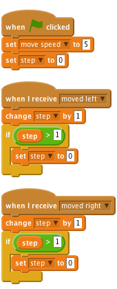
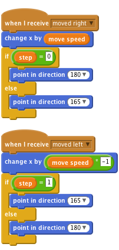

These projects are for use inside the UK only. All Code Clubs must be registered. You can check registered clubs on the map at www.codeclub.org.uk. This coursework is developed in the open on GitHub, github.com/CodeClub/ come and join us!
Using two legs sprites we can make our monsters appear to walk. To do this we need to set up a variable that switches between two states, one for our leg swinging forward and another for backwards (we’ll reverse these states for the other leg). To do this we need to first set up a step variable, then every time our moving broadcast is received, increase the variable by one. If the variable goes higher than one (we can test this with the greater than operator >) we reset it back to zero.

Now we can set our legs to swing by checking against our step variable. When the variable is set to zero we can change the direction of our leg (here we’ve used a fixed direction to stop our legs going mad if our variable and angle don’t match up, but maybe you want your monster to do that!). Don’t forget to move you legs along with your body using your move speed variable.

You could use the same sort of actions to make simple waving arms or even flapping bird wings.
These projects are for use inside the UK only. All Code Clubs must be registered. You can check registered clubs on the map at www.codeclub.org.uk. This coursework is developed in the open on GitHub, github.com/CodeClub/ come and join us!